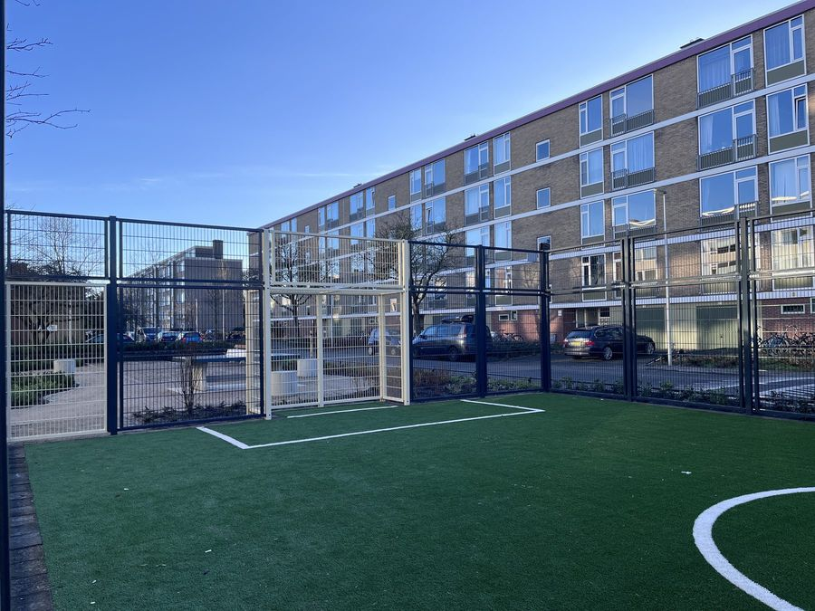
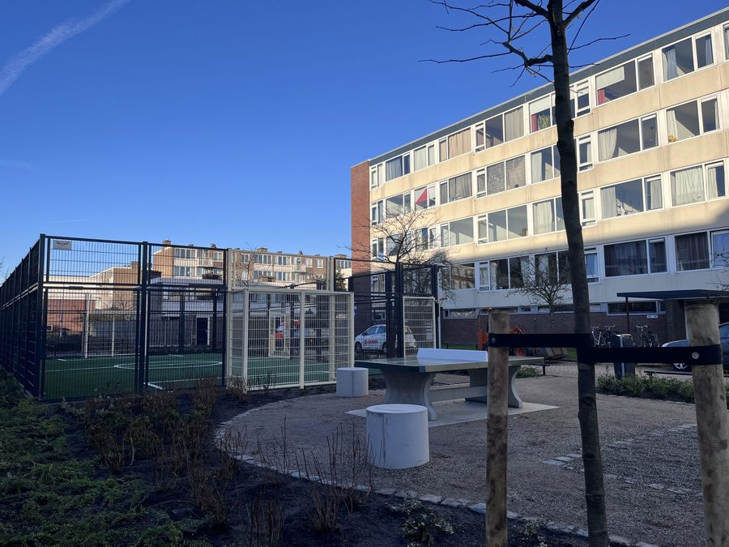
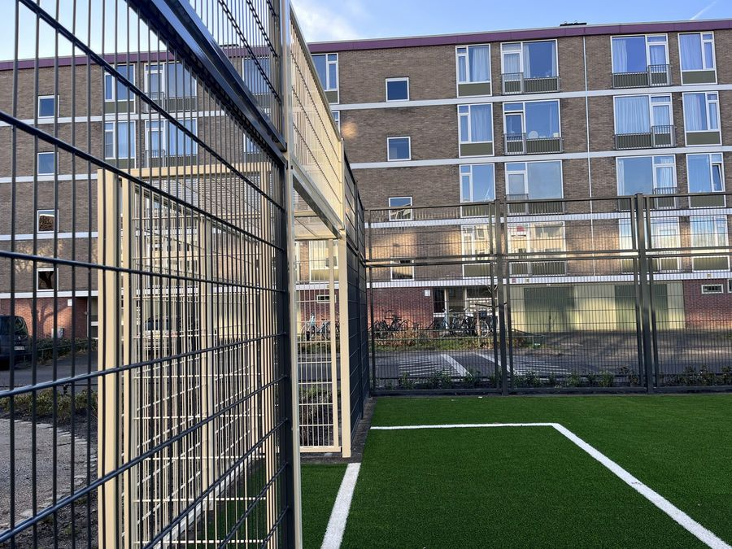
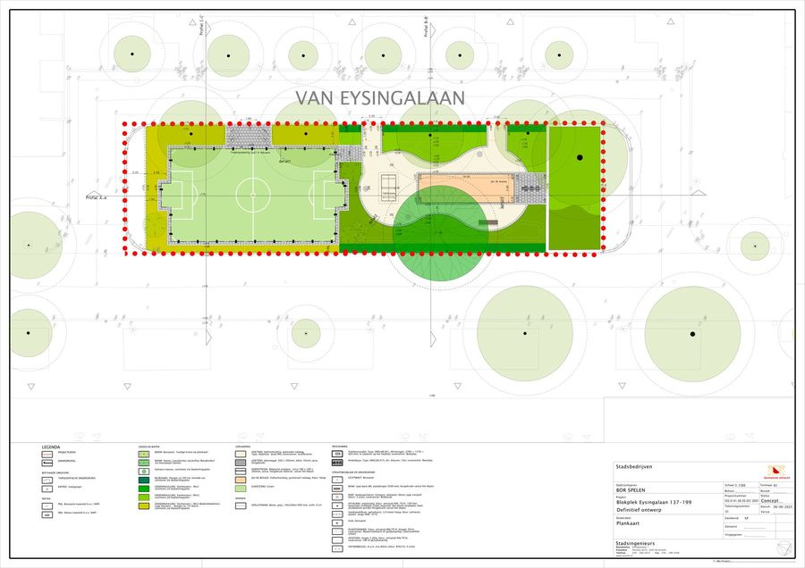
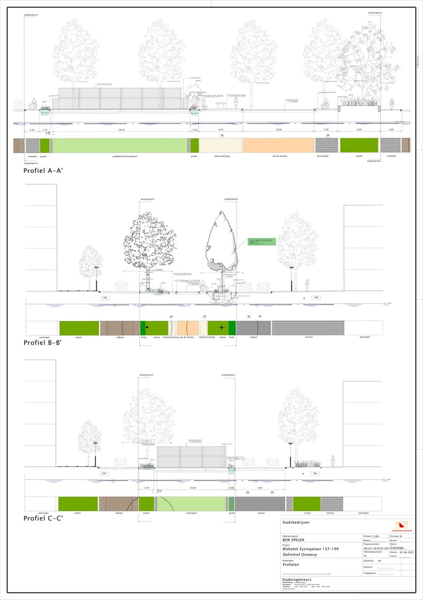
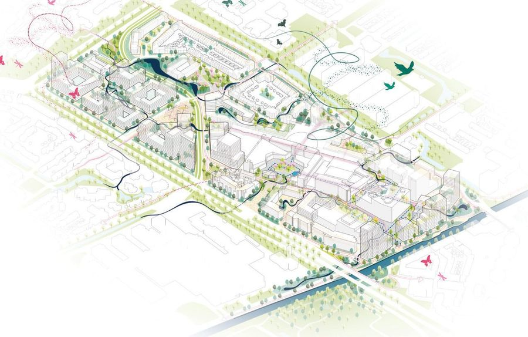

Blokplek Van Eysingalaan
- Place
- Transwijk, Utrecht
- Year
- 2025
- Assignment
- Sport- en speelplek
- Firm
- Gemeente Utrecht
- Design
- 2025
- Status
- Realised
- Team
- Stadsingenieurs, Ruimte

A courtyard between four housing blocks in Transwijk that the children living around it had stopped using. The design gives it back to them: a quieter football cage, room for table tennis and jeu de boules, and grass, shrubs and new trees where the hard surfacing used to be.
The blokplek at Van Eysingalaan 137–199 lies between four housing blocks in Transwijk. Its football cage and basketball court had become the territory of teenagers from further afield, and the children living around it had stopped coming — the survey found almost no resident who said their child played there.

Rather than adding programme, the design narrows it and widens the audience. The cage is rebuilt with sound-dampening fencing on an artificial turf field; the basketball court makes way for a table-tennis table and a jeu de boules court; the hard edges give way to grass, shrubs and new trees.


Seating poufs and bins are spread across the site — the two things residents asked for most. Almost all of the material, from the benches to the cobble strips, comes back out of the municipal depot.


Next projectCity NieuwegeinNieuwegein, 2022